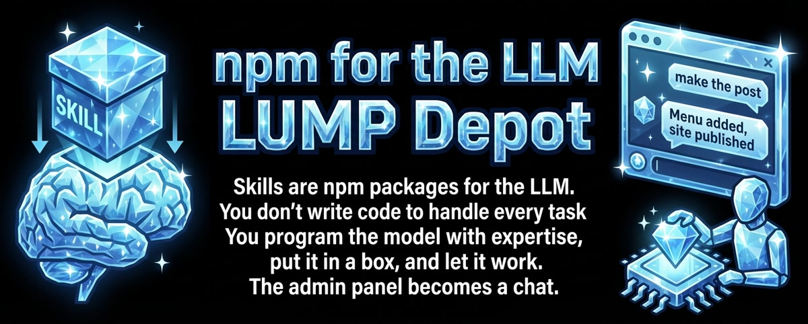

I was explaining skills to a developer friend last night. He's sharp, writes production code daily, but hadn't clicked with the idea yet. Then I said something that made it land for both of us.
"Skills are like npm packages for the LLM. You don't write them. You don't look at them. You just pull the ones you need."
That got his attention.
What you're actually doing
When you add a skill to your IDE, you're programming the LLM. Not in the traditional sense. You're not writing if-else branches or handlers. You're giving the model expertise, opinions, and constraints. You're putting it in a box and saying: work in this domain, follow these rules.
I have skills on this blog that handle my writing style, image generation, SEO wiring, even the publish checklist. When I want a new post, I don't open files or edit HTML. I paste in some notes and say "make the post." The model knows my design, my voice, my site structure. It does the rest.
The admin panel becomes a chat
That's the part that clicked for my friend. He asked me to walk through a concrete example, so I gave him one: a restaurant site. You want to add a special Easter menu? You tell the model. It makes the menu PDF. Adds it to the calendar. Creates a reservations section. Publishes the site. No CMS login, no drag-and-drop builder, no database migration.
"So the admin panel becomes a chat," he said.
Exactly.
You're not writing code to do things anymore
That's the shift. Instead of writing code to handle every scenario, you outsource it to an AI that you've trained to work within a specific domain. It does whatever it needs to do, following the rules you set. You still need infrastructure and code to hold it all together. But the surface area of what you personally have to build shrinks dramatically.
You can be the best at making a skill that writes React components, or processes Bible translations, or generates restaurant menus. That skill itself is the program. The LLM is the runtime.
It's a different way to think about tools
My friend said he's going to present this concept at his company next week. That surprised me a little, but it shouldn't have. Once you see it, it's hard to unsee. Your IDE collects skills for a project. The skills are accessible to the LLM. You tell it what you need and which skills to use. The model handles the rest.
It makes tools fuzzier. Less rigid. More like giving instructions to a capable person than clicking buttons in a dashboard.
tl;dr: Skills are npm packages for the LLM. You don't write code to do things. You program the model with domain expertise and let it work within the box you've built. The admin panel becomes a chat. Once you see it, you'll want to put skills on everything.